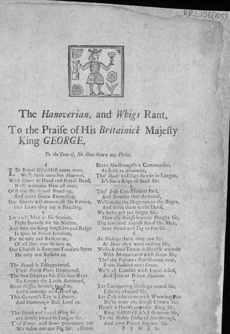
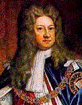
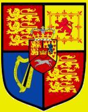

The Hanoverian and Whigs Rant
To the Praise of His Britainick Majesty King GEORGE
A broadside ballad published in 1714
To the Tune of
"Sit thee down my Philis"Sequenced by Christian Souchon
Sheet music - Partition
Supposed to be identical with "Phillis on the New-made Hay", a country dance tune appearing
in many works including Porter's play The Villain (1663), Merry Drollery Complete (1670),
The New Academy of Compliments and Playford's Dancing Master (1665),
Musick's Delight on the Cithern (1666), and Apollo's Banquet (1670).
Also used in numerous 18th centurt ballads including "The Coy Shepherdess;
or Phillis and Amintas" (Roxburghe Collection)
(Source: the Andrew Kuntz's "Fiddler's Companion")

National Library of Scotland - Probable date published: 1714 shelfmark: RB.I.106(105)

|
THE HANOVERIAN AND WHIGS RANT
1 Let Royal GEORGE come over, We'll have none but Hanover, With heart in hand and Royal band, We'll welcome Him all over, Of Royal birth and breeding, And every Grace exceeding, Our hearts will mourn till He return, Our laws they lay a- bleeding. 2 Let each man in his station. Fight bravely for his nation, And may our King long live and reign In spite of French invasion! For he only can relieve us Of all that ever grieve us. Our Church is rent, our treasure spent. He only can relieve us. 3 The French is disappointed, Their Popish plots disjointed, The sun displays his glorious rays To crown the Lord anointed, Since Nassau bravely freed us, And Cambridge now head us, This General's cry is "liberty" And Marlborough shall lead us. 4 The Dutch and loyal Whig, Sir, Are firmly joined in league, Sir, Though France and Rome pronounce our doom We value not one fig Sir. Brave Marlborough's a commander, As bold as Alexander, Though Macks and Teags do join in league, It's but a rope of sand Sir. 5 Though Irish cut-throats' evil And Frenchies that do snivel, We'll make the dogs run to the bogs, And drive them to the devil, We have not yet forgot Sir, How the British bravely fought Sir, The Scots and English flood like Men, Sent French and Teag to pot, Sir. 6 At Hastage there they ran Sir. At Mons they were undone Sir, We sank their towns in blood and wounds With mortars and with guns Sir, Though the Pretender should come over, From Dunkirk unto Dover We'll all combine with loyal mind And join to Prince Hanover. 7 Let conquering howls go round Sir, Liberty abound Sir, Let Cub who came with warming pan Ne'er wear the British Crown, Sir. Here's a health unto our King, Sir, King GEORGE it's I do mean Sir, To the Noble Duke of Marlborough, And unto Prince Eugene, Sir. F I N I S. |
LE CHANT DES HANOVRIENS ET DES WHIGS
1. Que vienne à nous le Roi GEORGES! Point d'autre roi que Hanovre! Que montent à son passage Nos chants pour lui rendre hommage! Noble et royale est sa race Parée de toutes les grâces Nous nous languissons sans Toi. Vois comme exsangues sont nos lois! 2. Que chacun prenne avec vaillance De notre Patrie la défense. Que règne et que vive ce roi, Même envahi par les Gaulois! Car tu es le seul qui soulages Nos malheurs légués par les âges: Eglise et trésor sont en ruine. Hormis toi, point de médecine. 3. Le Français en est pour ses frais: Son complot papiste avorté. Le soleil darde ses rayons Sur cet or dont s'orne ton front. Et nous qu'Orange avec courage Libéra, avant que Cambridge Nous guide aux cris de "Liberté!", Marlborough mène nos armées. 4. Les Hollandais, les Whigs loyaux Se sont forgé des liens solides. Et la France et Rome auront beau Tonner, nous restons impavides. Malrborough, ce chef redouté Est le successeur d'Alexandre. Les peuples Gaëls ont dressé Des murs de sable aisés à prendre. 5. L'Irlandais est un assassin. Le Français sans cesse pleurniche. Faisons en sorte que ces chiens Retournent chacun dans sa niche. Nous savons, encore aujourd'hui, Combattre tout comme naguère. L'Anglais et l'Ecossais unis Leur feront mordre la poussière. 6. Bastogne fut un "sauf qui peut". Mons les vit perdre la bataille, Villes détruites par le feu De nos boulets et la mitraille. Le Prétendant peut bien venir Et passer de Dunkerque à Douvres Nous mourrions en loyaux martyrs Plutôt qu'abandonner Hanovre. 7. Poussons haut nos cris de victoire: Car ce sont cris de liberté. Quant à l'homme à la bassinoire Qu'il ne soit jamais couronné. C'est à notre Roi que je lève Mon verre, au Roi GEORGES, s'entend, Ainsi qu'au brave Prince Eugène Et au Duc Marlborough, le Grand. FINIS Trad. Ch.Souchon (c) 2006 |
|
 The Act of Settlement 1701 devised the British Crown to the Prince-Elector of Hanover, Duke of Brunswick Luneburg George Louis's mother, the Princess Sophia of Hanover if the then-ruling monarch, William III, and his sister-in-law, the Princess Anne of Denmark, both died without issue. Under the Act of Settlement, his son, the Hereditary Prince became a naturalised English subject in 1705. Anne, who had succeeded to the English Throne in 1702, admitted the Elector's son, the Hereditary Prince (later King Georg II), to the Order of the Garter in 1706. She created him DUKE OF CAMBRIDGE, later the same year.Queen Anne died on August 1, 1714, shortly after the demise of the Electress Sophia (d. June 8, 1714). Consequently, Sophia's son George Louis inherited the Throne and was crowned as King of Great Britain George I on October, 20 1714. This poem, although ostensibly laudatory, in fact seems to be mocking the King with over-extravagant, insincere praise. For other explanations: see "A Halter for Rebels!"
|
 L'Acte de Dévolution de 1701 attribuait la couronne britannique à la mère du Prince Electeur de Hanovre Georges-Louis, Duc de Brunswick-Lunebourg, la Princesse Sophie de Hanovre, si le monarque de l'époque, Guillaume III et sa belle-soeur, la princesse Anne de Danemark mouraient tous les deux sans enfants.Conformément à cet Acte, le fils de l'Electeur, le Prince héréditaire, futur roi Georges II, fut naturalisé sujet britannique en 1705. Anne qui était montée sur le trône en 1705, le reçut dans l'Ordre de la Jarretière en 1706. Elle le créa DUC DE CAMBRIDGE un peu plus tard, dans le courant de la même année. La Reine Anne mourut le 1er août 1714, peu après le décès de l'Electrice Sophie (8 juin 1714). En conséquence le fils de Sophie héritait du trône et il fut couronné Roi de Grande Bretagne le 20 octobre 1714, sous le nom de Georges I. Ce poème, bien qu'ostensiblement louangeur, semble en fait se moquer de ce roi en lui faisant des compliments démesurés et affectés. Pour d'autres explications, cf "A Halter for Rebels!"
|